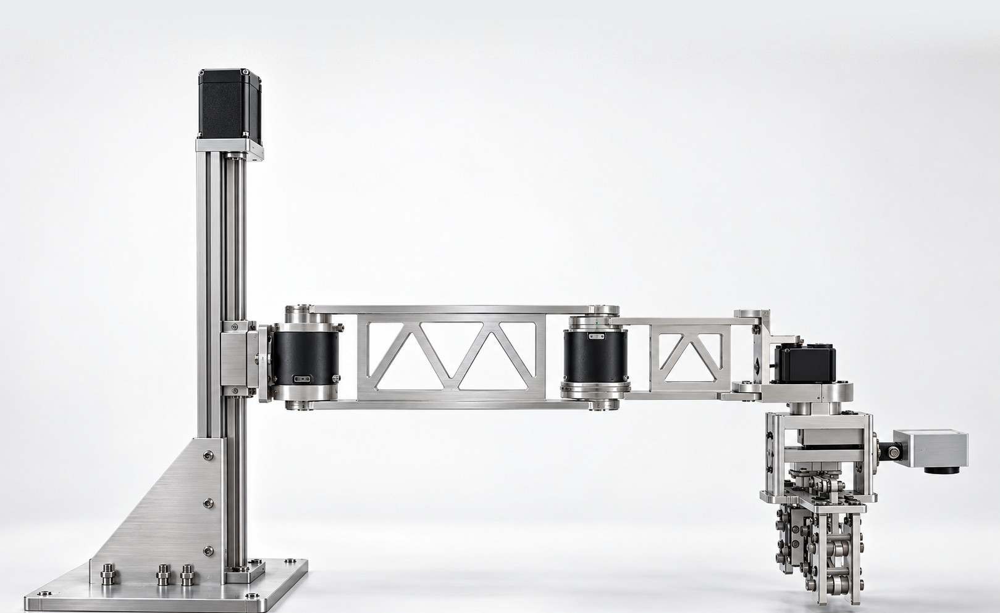
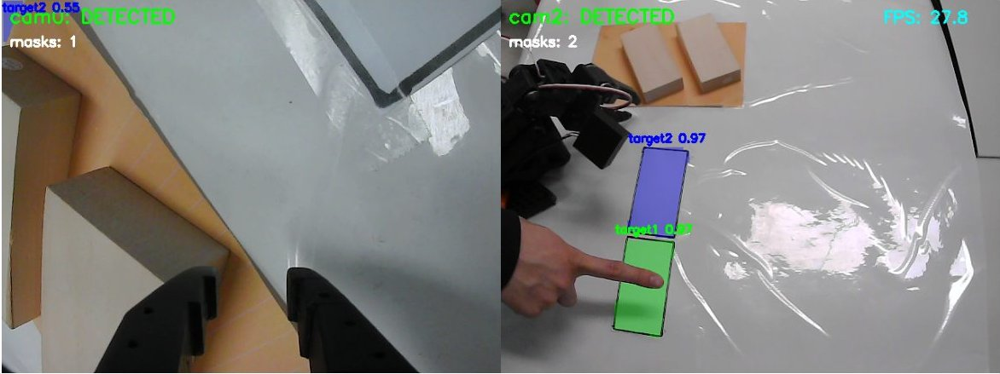
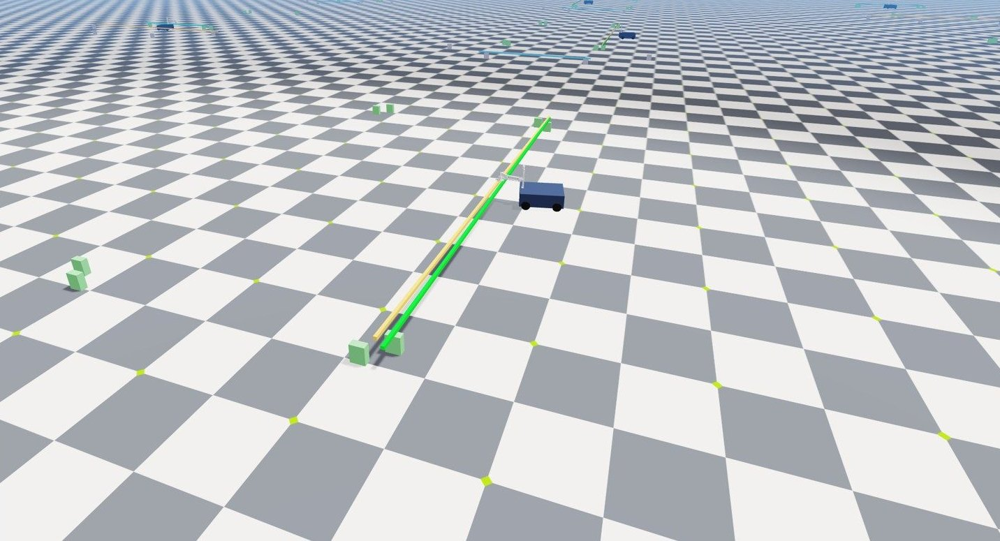
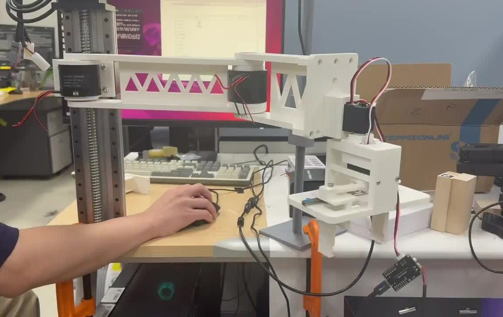
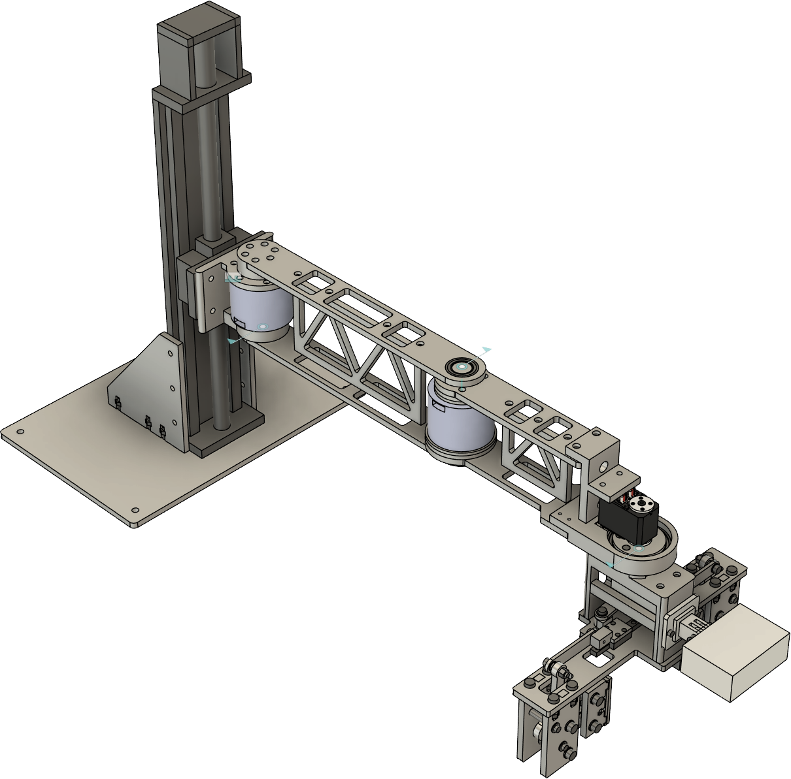
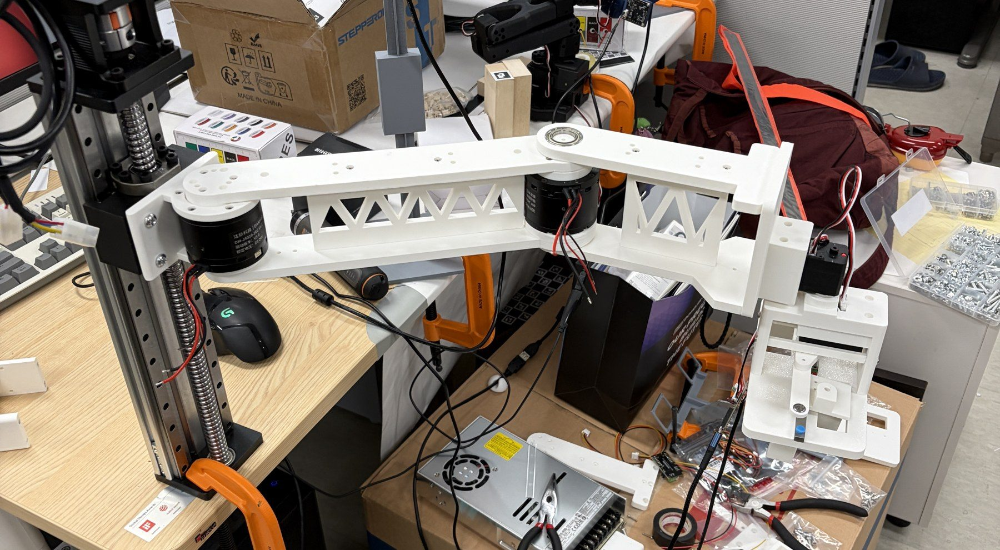
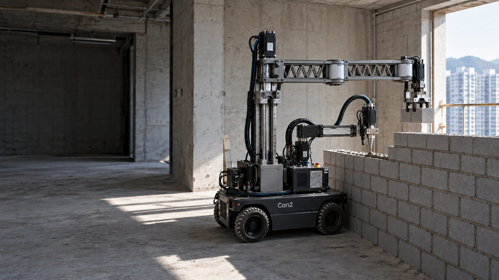

조적에서 시작해
현장 전체를 짓습니다
MANTA Robotics는 아파트 실내 조적을 무인화하는 이동형 로봇을 만듭니다. 바닥의 먹선을 읽어 2mm 안에 블록을 놓고, 사람의 시연으로 배운 정책으로 움직입니다.

사람을 구하지 못해 멈추는 공종
조적은 건설 공종 가운데 고령화와 노임 상승이 가장 빠른 축에 듭니다. 조적 로봇은 이미 있습니다. 하지만 대부분 트럭에 싣는 외벽용 대형 장비입니다. 세대 출입구를 지나 화장실과 발코니 벽을 쌓는 로봇은 아직 없습니다. 우리는 그 빈자리에서 시작합니다.
- 29.4%
- 60대 이상 건설 기능인력 비중건설근로자공제회, 2026년 5월
- 27만 원
- 조적공 1일 노임2026 상반기 건설업 임금실태조사
- 약 6천억 원
- 연간 아파트 세대 내 조적공사비연 착공 24~27만 호 × 세대당 230만 원, 자체 추정
먹선을 지도로 씁니다
현장에는 이미 좌표가 그려져 있습니다. 먹매김 단계에서 바닥과 벽에 남긴 먹선입니다. 텅 빈 콘크리트 세대 안에서는 일반 SLAM이 붙잡을 특징점이 적어 위치 오차가 쌓입니다.
MANTA는 카메라로 먹선을 인식해 시공 기준선에 대한 로봇의 위치와 방향을 직접 구합니다. 이동하며 쌓인 오차는 먹선을 다시 볼 때마다 기준선에 맞춰 되돌립니다. 블록을 놓기 직전에는 한 번 더 먹선 좌표로 위치를 보정합니다.


사람에게 배우고, 시뮬레이션에서 늘리고, 현장에서 맞춥니다

좌표를 하나하나 입력하는 기존 산업용 로봇은 작업이 바뀔 때마다 다시 가르쳐야 합니다. MANTA의 로봇은 숙련공의 시연을 보고 배웁니다. 새 작업은 시연 50~100회로 초기 정책을 만들고, 도구만 바꿔 같은 로봇이 다른 공정을 맡습니다.
현장 1인칭 시연
숙련공이 머리에 단 카메라로 손, 시선, 작업 장면을 기록합니다.
텔레오퍼레이션
리더 암으로 로봇을 직접 조종해 로봇 관점의 시연 데이터를 쌓습니다.
시뮬레이션 강화학습
디지털 트윈에서 대규모로 학습한 정책을 실제 로봇으로 옮깁니다.
먹선 기준 보정
놓기 직전 먹선 좌표로 위치를 다시 맞춰 2mm 안에 정렬합니다.
모르타르 협조 시공
토출 암이 모르타르를 바르고 배치 암이 블록을 놓는 과정을 한 사이클로 묶습니다.
로봇 암은 직접 설계하고 직접 만듭니다
시판 협동로봇은 제어기가 닫혀 있어 학습 정책을 올리기 어렵고, 본체만 4천만 원이 넘습니다. 그래서 암을 직접 설계했습니다. 3D 프린트 버전으로 구동과 모방학습을 검증했고, 지금은 알루미늄 구조로 옮기고 있습니다. 암 한 대의 제작원가는 약 300만 원입니다.

| 구조 | 수직 Z축과 수평 2관절, 손목 회전 |
|---|---|
| Z축 | 리니어 레일 444 mm |
| J1, J2 | DM4310 관절 모듈 |
| 손목 | STS3215 서보 |
| 그리퍼 | SE90 자가 체결형, 90 mm |
| 손목 카메라 | GoPro HERO11 |
| 링크 | 알루미늄 판재 트러스 |
| 수평 도달 | 약 430 mm |
| 제작원가 | 암 1대 약 300만 원 |


지금까지 온 곳
요소기술을 연구실에서 검증한 TRL 3 단계입니다. 현장 PoC로 TRL 6을 검증하는 것이 다음 목표입니다.
완료
- 텔레오퍼레이션 시연 데이터 수집
- 모방학습 정책 학습과 구동 검증
- 로봇 암 설계와 3D 프린트 시제품
- 시뮬레이션에서 15kg 부재 배치 약 1분, 사람 대비 1.5~2배
- 등록특허 1건, 출원 1건, 국제 저널
진행 중
- 알루미늄 금속 구조 전환
- 모르타르 펌프와 토출 암 개발
- 디지털 트윈 구축
- 조적 동작 시간과 정밀도 실측
다음
- 현장 투입용 시제품 로봇 제작
- 공동주택 현장 12개월 PoC
| 블록 위치 오차 | 2 mm 이내 |
|---|---|
| 모르타르 토출 정량 | ±5% |
| 재시도 없는 배치 성공률 | 90% 이상 |
같은 파이프라인에 도구만 바꿉니다
먹선과 벽체 인식, 시연 학습, 시뮬레이션 학습은 공종이 바뀌어도 그대로 씁니다. 바뀌는 것은 로봇 손끝의 도구와 학습 데이터입니다. 조적에서 검증한 방식을 실내 마감 공종으로, 다시 모듈 공장과 건설 현장 전체로 넓힙니다.
로봇이 맡는 공사비 1.0조 원 연간, 건축공사비의 6.6%
-
조적
건축공사비의 6.6%, 연 약 1.0조 원
아파트 세대 내 비내력 벽에서 시작합니다. 화장실, 발코니, PD, 칸막이 벽입니다. 사람을 구하기 가장 어렵고, 먹선 기준이 가장 분명한 공종입니다.
-
실내 마감
누적 28.1%, 연 약 4.3조 원
미장, 타일, 도장, 방수, 수장을 더합니다. 모두 먹선과 벽체를 기준으로 반복하는 작업입니다. 인식 모델과 학습 방식은 그대로 두고 손끝의 도구와 시연 데이터만 바꿉니다.
-
모듈 공장과 설치 공종
누적 39.5%, 연 약 6.1조 원
같은 로봇 암에 용접 토치와 패널 흡착 그리퍼를 달면 OSC 모듈 공장의 골조 조립과 벽체 패널 설치를 맡습니다. 공장에서 검증한 조립과 설치 기술을 현장의 금속, 창호 공종으로 가져옵니다.
-
건설 현장 전체
공동주택 건축공사비 연 약 15조 원
골조와 토공까지 포함한 건축공사 전체가 목표입니다. 현장마다 쌓인 시연과 작업 데이터가 다음 공종의 출발점이 됩니다.
공종 비중은 공동주택 건축공사 19개 공종 기준이며, 상위 10개 공종과 나머지 9개 공종의 합으로 나타냈습니다. 금액은 연 착공 약 25만 호에 세대당 건축공사비 약 6,150만 원을 곱한 자체 추정치입니다. 세대당 건축공사비는 SH 고덕강일 4단지 준공원가의 세대당 조적공사비 406만 원을 조적 비중 6.6%로 나눠 구했습니다.
건설 현장과 AI 연구를 모두 아는 팀
대형 건설사에서 시공을 관리한 두 사람과 AI 스타트업 출신 한 사람이 모였습니다. 세 사람 모두 연세대학교에서 건설 AI를 연구합니다.
-
최기창 대표
총괄, 로봇 설계, 학습 모델
연세대학교 토목환경공학 박사과정. 쌍용건설 시공 관리 3년 6개월. Automation in Construction, Advanced Engineering Informatics 제1저자. 전국 수위예측 서비스를 24시간 무인으로 운영 중입니다.
-
박현욱 공동창업
행동 모델, 시뮬레이션 학습, 재무
연세대학교 석박사통합과정. DL E&C 건축시공 1년 8개월. CFA Level I, 건축기사.
-
강다연 공동창업
시연 데이터, 사업 개발
연세대학교 석사과정. AI 스타트업 근무. LH 국토개발기술대전 우수상.
연구 기반. 연세대학교 건설환경공학과 김홍조 교수 연구실(Smart Infrastructure Lab). 국제 저널 42편, 특허 등록과 출원 20건. 컴퓨터 비전, 3D, 물리 정보 AI, 공학 에이전트를 연구합니다.
이야기를 나누고 싶습니다
IR 자료와 시제품 구동 영상은 메일로 보내드립니다. 현장 PoC를 함께할 건설사와 모듈 제작사도 찾고 있습니다.
서울특별시 서대문구 연세로 50, 연세대학교 제1공학관